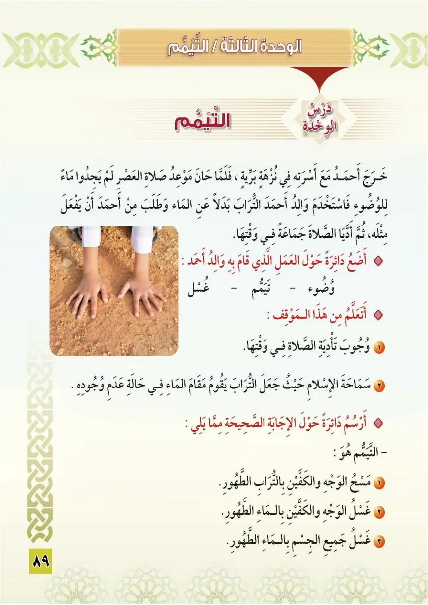
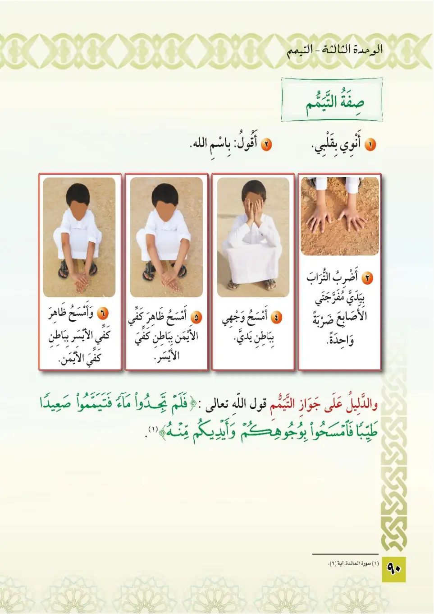
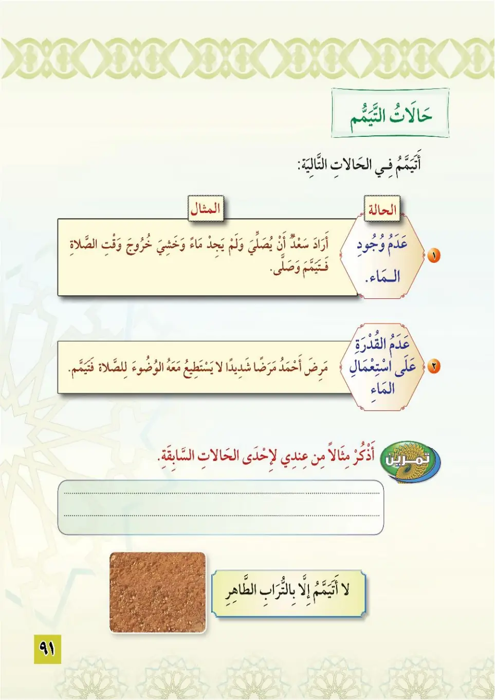
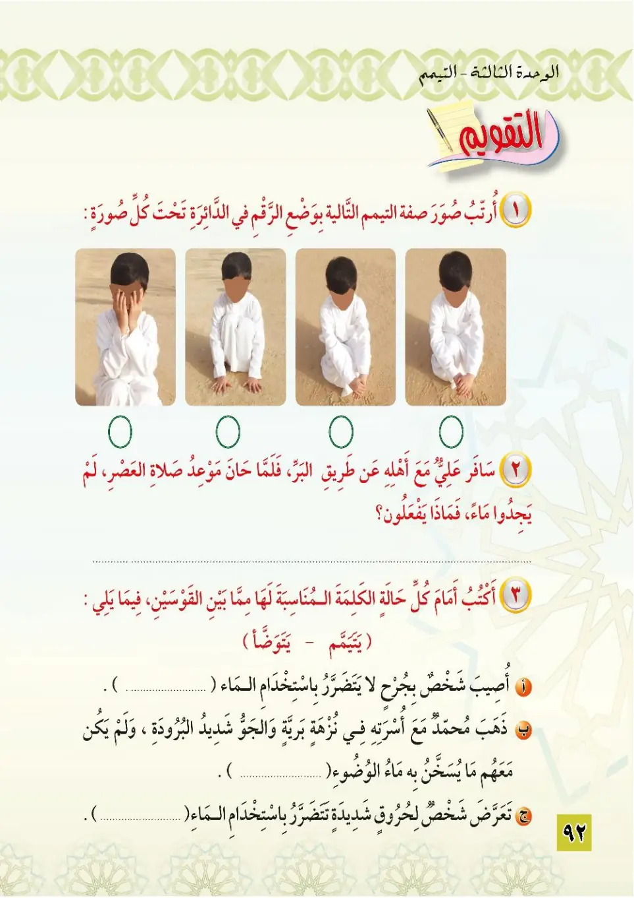

Stage 3·المرحلة الثالثة💧 Unit 3
التَّيَمُّمُ Tayammum (Dry Ablution)
From the Textbookpp. 90–93




خرج أحمد مع أسرته في نزهة برية، فلما حان موعد صلاة العصر لم يجدوا ماءً، فاستخدم والد أحمد التراب بدلًا عن الماء للوضوء، فتيمم مثله، ثم أديا الصلاة في جماعة. أتعلم من هذا الموقف: ١- وجوب تأدية الصلاة في وقتها. ٢- سماحة الإسلام في أن التراب يقوم مقام الماء عند عدم وجوده.
Kharaja Ahmad ma'a usratihi fi nuzhatin barriyah, falamma hana maw'idu salati al-asr lam yajidu ma'an, fastakhdama abu Ahmad at-turaba badalan 'ani al-ma'i lil-wudu, fata-yammama mithlah, thumma addaya as-salah fi jama'ah.
Ahmad went out with his family for a picnic in the desert. When the time of Asr prayer came they found no water, so Ahmad's father used clean dust instead of water for ablution, performed tayammum, and they both prayed in congregation.
I learn from this scene:
1. The obligation of the prayer on time.
2. The tolerance of Islam: dust takes the place of water when none is found.
அஹ்மத் தன் குடும்பத்துடன் காட்டுச் சுற்றுலாவுக்குச் சென்றான்; அஸ்ர் தொழுகை நேரம் வந்தபோது தண்ணீர் இல்லை; அஹ்மத்தின் தந்தை தண்ணீருக்குப் பதிலாக தூய மண்ணைப் பயன்படுத்தி தயம்மும் செய்தான்; அஹ்மத்தும் அதுபோல செய்தனர்; பின்னர் ஜமாஅத்தாக தொழுதனர்.
இதிலிருந்து கற்பது:
1. தொழுகையை சரியான நேரத்தில் செய்வது கடமை.
2. இஸ்லாத்தின் சகிப்புத்தன்மை: தண்ணீர் இல்லாதபோது மண் அதற்கு மாற்றாகும்.
التيمم هو: مسح الوجه والكفين بالتراب الطهور. أماكن التيمم: ١- من لم يجد ماءً وخشي فوات وقت الصلاة. ٢- من اشتد به المرض ويضره استعمال الماء. ٣- من لا يستطيع الوصول إلى الماء.
At-tayammum huwa: mas-ul-wajhi wal-kaffayni bit-turabi at-tahur. Amakin at-tayammum: man lam yajid ma'an wa khashiya fawata waqti as-salah, wa man ishtadda bihi al-maradu wa yadhurruhu isti'malu al-ma', wa man la yastati'u al-wusula ila al-ma'.
Tayammum is: wiping the face and the hands with pure dust.
Situations requiring tayammum:
1. Whoever finds no water and fears the prayer time will pass.
2. Whoever is severely ill and harmed by using water.
3. Whoever cannot reach water.
தயம்மும் என்பது: தூய மண்ணால் முகத்தையும் கைகளையும் துடைத்தல்.
தயம்மும் செய்யும் சந்தர்ப்பங்கள்:
1. தண்ணீர் கிடைக்காது, தொழுகை நேரம் போய்விடும் என அஞ்சுபவர்.
2. கடும் நோயாளி, தண்ணீர் உபயோகித்தால் தீங்கு ஏற்படுபவர்.
3. தண்ணீரை அடைய முடியாதவர்.
﴿فَلَمْ تَجِدُوا مَاءً فَتَيَمَّمُوا صَعِيدًا طَيِّبًا فَامْسَحُوا بِوُجُوهِكُمْ وَأَيْدِيكُم مِّنْهُ﴾
Falam tajidu ma'an fa-tayammamu sa'idan tayyiban famsahu bi-wujuhikum wa aydikum minhu.
If you can find no water, then take some clean sand and wipe your face and hands with it.
தண்ணீர் கிடைக்கவில்லையெனில், தூய மண்ணை எடுத்து உங்கள் முகங்களையும் கைகளையும் துடைத்துக்கொள்ளுங்கள்.
صفة التيمم: ١- أقول: بسم الله، وأنوي. ٢- أضرب التراب بيدي مفرجتي الأصابع. ٣- أمسح وجهي. ٤- أمسح كفي اليمنى بباطن كفي اليسرى، ثم كفي اليسرى بباطن كفي اليمنى. ولا يتيمم إلا بالتراب الطاهر.
Sifatu at-tayammum: aqulu bismillah wa anwi, adribu at-turaba bi-yadayya mufarrijatay al-asabi', amsahu wajhi, amsahu kaffi al-yumna bi-batini kaffi al-yusra thumma kaffi al-yusra bi-batini kaffi al-yumna.
How to perform tayammum:
1. I say: Bismillah, and make the intention.
2. I strike the clean dust with my hands, fingers spread.
3. I wipe my face.
4. I wipe the right hand with the inner side of the left hand, then the left hand with the inner side of the right hand.
Tayammum is only done with pure dust.
தயம்முமின் முறை:
1. பிஸ்மில்லாஹ் கூறி நோக்கம் செய்கிறேன்.
2. கூப்பிய விரல்களுடன் இரு கைகளாலும் மண்ணில் தட்டுகிறேன்.
3. முகத்தை துடைக்கிறேன்.
4. இடது கையின் உள்ளங்கையால் வலது கையையும், வலது கையின் உள்ளங்கையால் இடது கையையும் துடைக்கிறேன்.
தூய மண்ணால்தான் தயம்மும் செய்வது.